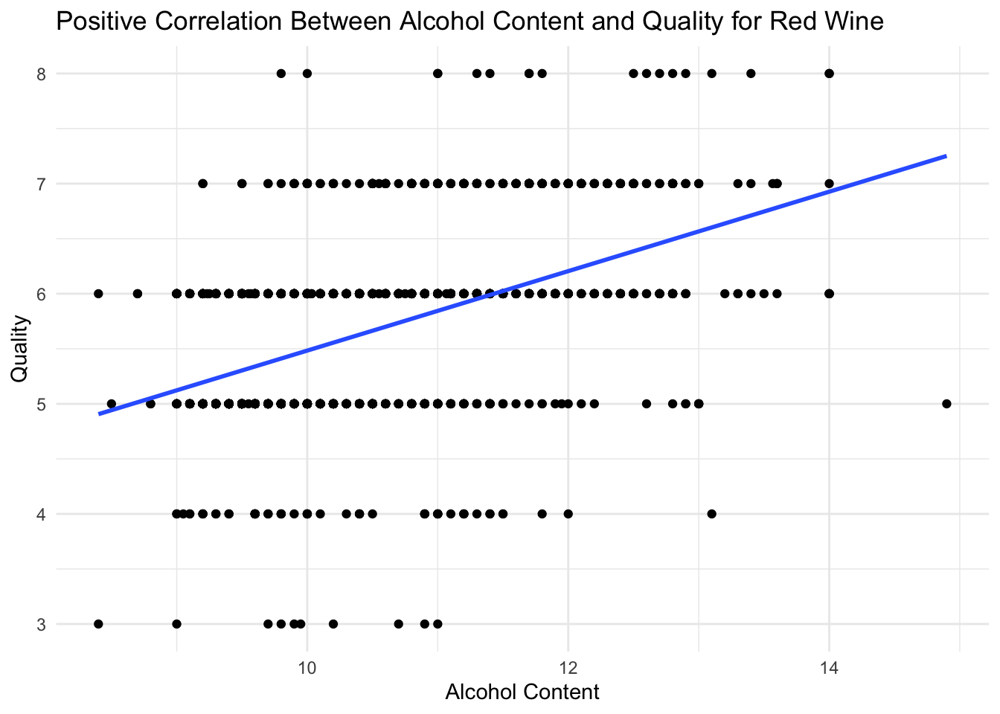
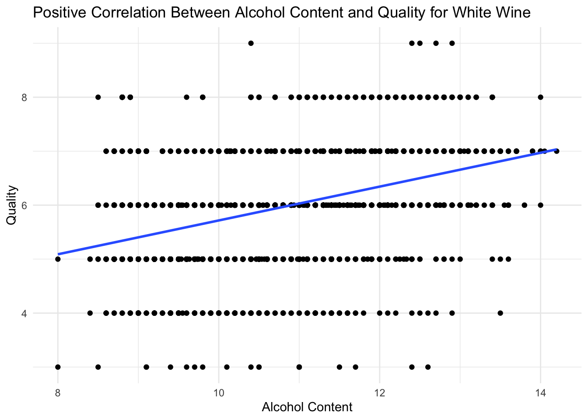
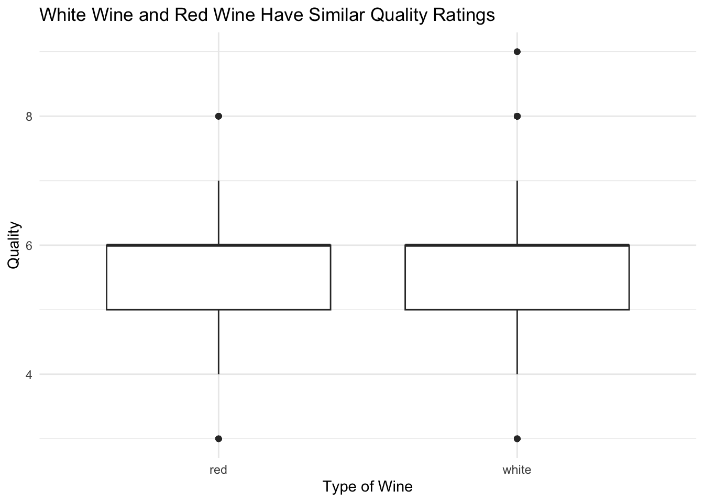

Exploring Effects of Alcohol Content and Wine Type on Wine Quality
Introduction
This analysis explores different factors that may affect the quality of wine. Particularly, we’ll focus on two main factors: alcohol content and type of wine (red or white), examining their influence on a wine’s quality score, which is measured on a scale from 1 to 10. We’ll do so using data on red and white variants of the Portuguese “Vinho Verde” wine, sourced from the UCI Machine Learning Repository.
Questions
This analysis will aim to answer two main questions:
How does alcohol content affect red wine quality?
How do alcohol content and wine type affect wine quality?
Prepare Environment
Tidyverse is the only library required for this analysis. Here we’re loading two datasets: one for white wine, and one for red wine. We’ll first be using just the red wine dataset, and then we’ll join them later to see how the type of wine in conjunction with alcohol content may affect quality.
library(tidyverse)
── Attaching core tidyverse packages ──────────────────────── tidyverse 2.0.0 ──
✔ dplyr 1.1.4 ✔ readr 2.1.5
✔ forcats 1.0.0 ✔ stringr 1.5.1
✔ ggplot2 3.5.2 ✔ tibble 3.2.1
✔ lubridate 1.9.4 ✔ tidyr 1.3.1
✔ purrr 1.0.4
── Conflicts ────────────────────────────────────────── tidyverse_conflicts() ──
✖ dplyr::filter() masks stats::filter()
✖ dplyr::lag() masks stats::lag()
ℹ Use the conflicted package (<http://conflicted.r-lib.org/>) to force all conflicts to become errors
Simple Linear Regression: Alcohol Content vs. Wine Quality
Data Visualization
First, we’ll visually explore the relationship between the alcohol content of red wine and its quality.
red_wine |>ggplot(aes(x = alcohol, y = quality)) +geom_point() +geom_smooth(method ="lm", se =0) +labs(title ="Positive Correlation Between Alcohol Content and Quality for Red Wine",x ="Alcohol Content",y ="Quality") +theme_minimal()
`geom_smooth()` using formula = 'y ~ x'

From this visualization, there appears to be a positive relationship between alcohol content and quality, suggesting that on average, red wine with higher alcohol content tend to receive higher quality scores. However, there is a lot of variation between red wine with similar alcohol content, suggesting that there are other factors that contribute to red wine quality other than alcohol content.
Choice of Linear Model
We want to know how red wine’s quality is potentially affected by its alcohol content. This means that quality will be our response variable, and alcohol will by our explanatory variable. As we’re only worried about the effect of one explanatory varible on one response variable in this case, we’ll perform a simple linear regression. Since we want to know how alcohol content may affect wine quality on average, we’ll use Ordinary Least Squares (OLS) to perform our regression. It appears that wine scores are pretty symmetrically distributed and there aren’t many outliers, so it wouldn’t make sense to use Least Absolute Deviations (LAD) in this case.
Fitting the Model
red_wine_model <-lm(quality ~ alcohol, data = red_wine)
The intercept is 1.875, meaning that wine with an alcohol content of zero would receive a quality score of 1.875 on average. This intercept does not necessarily provide us with very useful information, as all of the red wine in this dataset has an alcohol content of 8.4% or greater.
min(red_wine$alcohol)
[1] 8.4
Slope
The point estimate for the slope is 0.36, meaning that for each percent increase in alcohol content, we would expect the quality score to increase by 0.36.
The 95% confidence interval for the slope is [0.3281343, 0.3935493]. This means we can be confident both that there is a positive relationship between alcohol content and red wine quality and that the true value of the slope for this relationship is between 0.3281343 and 0.3935493.
Multiple Linear Regression: Alcohol Content & Wine Type vs. Wine Quality
Prepare Data
Now, we’ll combine the red wine dataset and the white wine dataset, in order to account for wine type as a factor in wine quality. We’ll also declare type as a factor, so that we can use it in our regression later on.
Let’s first visualize the relationship between alcohol content and wine quality for white wine.
white_wine |>ggplot(aes(x = alcohol, y = quality)) +geom_point() +geom_smooth(method ="lm", se =0) +labs(title ="Positive Correlation Between Alcohol Content and Quality for White Wine",x ="Alcohol Content",y ="Quality") +theme_minimal()
`geom_smooth()` using formula = 'y ~ x'

From this graph, it appears that, similarly to red wine, white wine also has a positive correlation between alcohol content and quality, however the slope appears to be lower for white wine than for red wine.
We can also compare wine quality between red and white wine, to get an idea of how they typically differ in quality.
combined_wine |>ggplot(aes(x = type, y = quality)) +geom_boxplot() +labs(title ="White Wine and Red Wine Have Similar Quality Ratings", x ="Type of Wine",y ="Quality") +theme_minimal()

In looking at this boxplot, it’s evident that there is not a significant difference in quality between white and red wine overall, although white wine seems to have a few more outliers on the high end.
Choice of Linear Model
We want to look at how alcohol content and type of wine affect quality, so our explanatory variables will be alcohol content and wine type, and our response variable will be quality. As we’re interested on the effect of two explanatory variables on one response variable, we’ll have to use multiple linear regression to answer this question. Additionally, since the residuals are fairly symmetric and there don’t appear to be too many outliers in the data, it once again makes more sense to use Ordinary Least Squares (OLS) for our regression, rather than Least Absolute Deviations (LAD).
As the slopes for alcohol content vs. wine quality appear to be different between white wine or red wine, it seems to make sense to use an interaction model rather than a parallel slopes model, as the effect of alcohol on quality do not seem to be consistent between wine types. This way, we can examine what the difference in effect is between red wine and white wine.
Fitting the Model
Here, I am fitting the interaction model, using wine quality as a response variable and alcohol and wine type as explanatory variables.
type_model <-lm(quality ~ alcohol * type, data = combined_wine)
Visualizing the Relationships
ggplot(combined_wine, aes(x = alcohol, y = quality, color = type)) +geom_point() +geom_smooth(method ="lm", se =FALSE) +labs(title ="Interaction Between Alcohol and Wine Type on Quality",x ="Alcohol Content",y ="Quality",color ="Wine Type" ) +theme_minimal()
The intercept for this model is 1.87497, meaning that the predicted quality score of a red wine with an alcohol content of zero would be 1.87497. Again, this intercept is not very useful, as there is no wine in this dataset that has an alcohol content of zero. As indicated by “typewhite”, white wine has an intercept that is 0.70703 higher than red wine, meaning that we would expect white wine with an alcohol content of zero to have a quality score of 2.582.
Slope
The point estimate for the slope for red wine is 0.36084, meaning that for each percent increase in alcohol content for red wine, we would expect the slope to increase by 0.36804. When we look at the interaction effect, we can see that there is a weaker slope for white wine than for red wine – the slope for white wine is 0.04737 less than the slope for red wine. This means that for each percent increase in alcohol content for white wine, we would expect the quality score to increase by 0.314.
From the 95% confidence intervals calculated above, we can be confident that the intercept for red wine is between 1.500 and 2.250, the alcohol effect for red wine is between 0.325 and 0.397, the intercept for white wine is between 0.288 and 1.126 higher than for red wine, and the interaction effect is between -0.087 and -0.008. Since none of these intervals contain zero, all coefficients are statistically significant.
Conclusions
How Does Alcohol Content Affect Red Wine Quality?
The analysis revealed a positive linear relationship between alcohol content and quality for red wines. More specifically, for each percent increase in alcohol content, there was an increase in quality of 0.3608 on average, with a 95% confidence interval of [0.3281343, 0.3935493].
How Do Alcohol Content and Wine Type Affect Wine Quality?
The analysis revealed that on average, white wines have a higher quality rating than red wines, however the effect of alcohol content on quality ratings is stronger for red wine than for white wine, with a confidence interval of [-0.0872537, -0.007491229] for the interaction effect between white wine and red wine. Overall, we can conclude that within this dataset, alcohol content has a diminished effect on alcohol quality for white wine in comparison to red wine, although the difference in effects is relatively small.
Validity
Internal Validity
Since we’re only considering alcohol content and wine type, it’s possible that there are other confounding variables that we are not considering that are impacting the quality rating of red and white wines. In order to account for this, we could perform a more comprehensive analysis, making considerations about other factors that may impact the quality of a wine, such as pH, volatile acidity, and residual sugar, to name a few.
External Validity
Since this dataset only contains a specific type of wine from a specific location (Vinho Verde wine from Portugal), we may not be able to generalize these findings to all wine. In order to have more generalizable findings, we would need to conduct an analysis on a more varied sample, containing different types of wine from different locales.
Construct Validity
Finally, when performing this analysis, we are assuming that “quality” is an objective measurement, however wine quality is subjective, and largely based on preference. There are many factors that go into determining wine quality, however it is difficult to say how reliable a rating of wine quality truly is, depending on what factors may be impacting it. In order to truly make claims about wine quality, we would need a universally accepted, well-defined metric for it.